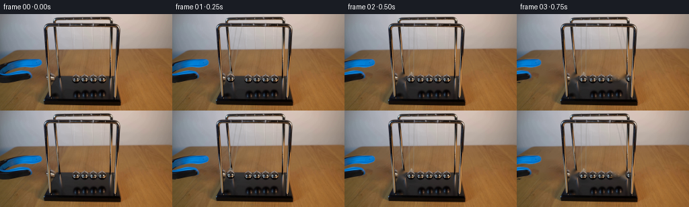
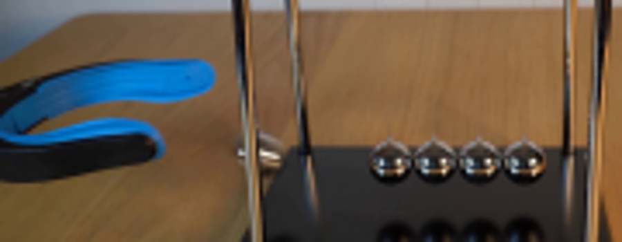
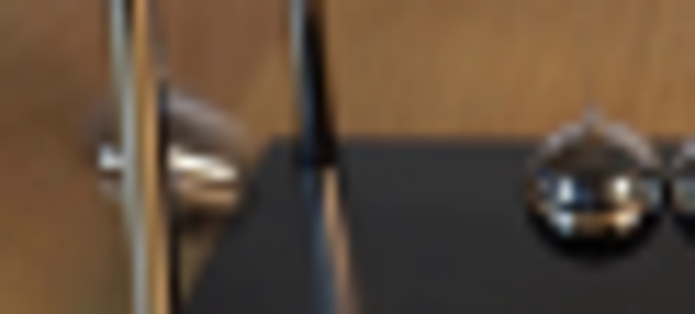
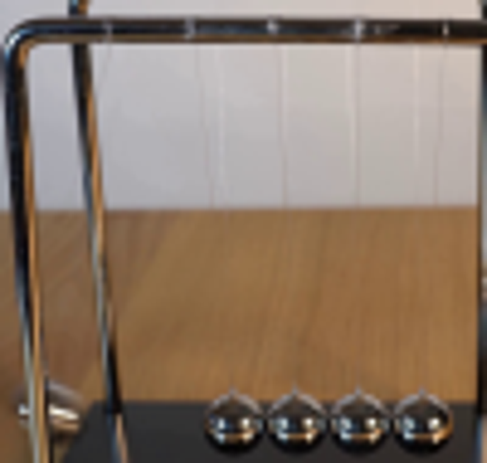
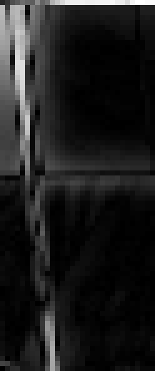
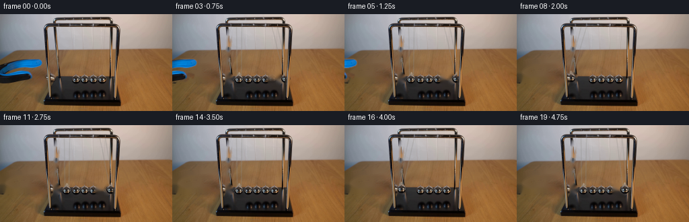

CODING AGENTS AS PIXEL WORLD MODELS
traex/GPT-5.6-Sol · 0161
点击播放 · 原生 RGB 像素
逐轮保存的候选
回放视频、检查图与代码变化。
每份候选均可单独播放。实际图片检查记录在下方工具轨迹中。
候选 01播放与检查图
点击播放 · 原生 RGB 像素

展开代码变化
--- 上一保存版本
+++ 本次保存版本
@@ -0,0 +1,203 @@
+from pathlib import Path
+
+import cv2
+import numpy as np
+from PIL import Image, ImageDraw, ImageFilter
+
+import artifact_io
+
+
+HERE = Path(__file__).resolve().parent
+
+
+def line_mask(shape, p0, p1, width=1):
+ out = np.zeros(shape, np.uint8)
+ cv2.line(out, p0, p1, 255, width, cv2.LINE_AA)
+ return out
+
+
+def soft_composite(dst, src, alpha):
+ """Composite equally-sized RGB images with a floating 0..1 alpha."""
+ a = alpha[..., None].astype(np.float32)
+ return np.clip(dst.astype(np.float32) * (1.0 - a) + src.astype(np.float32) * a,
+ 0, 255).astype(np.uint8)
+
+
+def paste_rgba(dst, rgba, center, opacity=1.0):
+ h, w = rgba.shape[:2]
+ x0 = int(round(center[0] - w / 2))
+ y0 = int(round(center[1] - h / 2))
+ x1, y1 = x0 + w, y0 + h
+ dx0, dy0 = max(0, x0), max(0, y0)
+ dx1, dy1 = min(dst.shape[1], x1), min(dst.shape[0], y1)
+ if dx0 >= dx1 or dy0 >= dy1:
+ return
+ sx0, sy0 = dx0 - x0, dy0 - y0
+ sx1, sy1 = sx0 + dx1 - dx0, sy0 + dy1 - dy0
+ patch = rgba[sy0:sy1, sx0:sx1]
+ a = patch[..., 3:4].astype(np.float32) * (opacity / 255.0)
+ dst[dy0:dy1, dx0:dx1] = np.clip(
+ dst[dy0:dy1, dx0:dx1].astype(np.float32) * (1.0 - a)
+ + patch[..., :3].astype(np.float32) * a, 0, 255).astype(np.uint8)
+
+
+def draw_suspension(frame, anchor_x, ball_x, ball_y):
+ """The two very fine monofilaments from the rail to one moving ball."""
+ overlay = frame.copy()
+ # The filmed strings are only about one pixel wide and partly transparent.
+ for ax, bx in ((anchor_x - 4, ball_x - 3), (anchor_x + 4, ball_x + 3)):
+ cv2.line(overlay, (int(round(ax)), 19),
+ (int(round(bx)), int(round(ball_y - 6))),
+ (139, 137, 132), 1, cv2.LINE_AA)
+ frame[:] = cv2.addWeighted(frame, .68, overlay, .32, 0)
+
+
+def add_shadow(frame, x, y, strength=.42):
+ layer = Image.new("RGBA", (256, 144), (0, 0, 0, 0))
+ d = ImageDraw.Draw(layer)
+ d.ellipse((x - 7, y + 5, x + 8, y + 11), fill=(0, 0, 0, int(120 * strength)))
+ layer = layer.filter(ImageFilter.GaussianBlur(2.0))
+ arr = np.asarray(layer)
+ a = arr[..., 3:4].astype(np.float32) / 255.0
+ frame[:] = np.clip(frame.astype(np.float32) * (1 - a), 0, 255).astype(np.uint8)
+
+
+def add_ball(frame, sphere, anchor_x, x, y, previous_x=None):
+ # A restrained exposure smear on the quickest quarter of the swing.
+ if previous_x is not None and abs(previous_x - x) > 9:
+ for frac, op in ((.28, .10), (.58, .08)):
+ xx = x + (previous_x - x) * frac
+ paste_rgba(frame, sphere, (xx, y), opacity=op)
+ add_shadow(frame, x, y)
+ paste_rgba(frame, sphere, (x, y), opacity=1.0)
+ # Small steel ferrule above the sphere, present on the photographed balls.
+ overlay = frame.copy()
+ pts = np.array([[int(x - 3), int(y - 6)], [int(x), int(y - 10)],
+ [int(x + 3), int(y - 6)]], np.int32)
+ cv2.fillConvexPoly(overlay, pts, (153, 151, 144), cv2.LINE_AA)
+ cv2.line(overlay, (int(x), int(y - 10)), (int(x), int(y - 7)),
+ (218, 216, 205), 1, cv2.LINE_AA)
+ frame[:] = cv2.addWeighted(frame, .55, overlay, .45, 0)
+
+
+def main():
+ original = np.asarray(Image.open(HERE / "first_frame.png").convert("RGB"))
+ bgr = cv2.cvtColor(original, cv2.COLOR_RGB2BGR)
+ H, W = original.shape[:2]
+
+ # Isolate the blue/black releasing grabber. A feathered keyed mask keeps its
+ # real photographed highlights and edges when it retracts out of shot.
+ hsv = cv2.cvtColor(bgr, cv2.COLOR_BGR2HSV)
+ gray = cv2.cvtColor(bgr, cv2.COLOR_BGR2GRAY)
+ grab = np.zeros((H, W), np.uint8)
+ blue = ((hsv[..., 0] > 88) & (hsv[..., 0] < 118) &
+ (hsv[..., 1] > 100) & (np.indices((H, W))[1] < 67) &
+ (np.indices((H, W))[0] > 61) & (np.indices((H, W))[0] < 103))
+ grab[blue] = 255
+ upper = np.zeros_like(grab)
+ lower = np.zeros_like(grab)
+ cv2.fillPoly(upper, [np.array([(0, 75), (18, 69), (62, 68), (65, 79),
+ (26, 84), (0, 91)])], 255)
+ cv2.fillPoly(lower, [np.array([(0, 85), (35, 83), (57, 90), (58, 99),
+ (44, 103), (0, 99)])], 255)
+ grab[((upper | lower) > 0) & (gray < 82)] = 255
+ grab = cv2.dilate(grab, np.ones((3, 3), np.uint8), iterations=1)
+ grab_soft = cv2.GaussianBlur(grab, (3, 3), .65).astype(np.float32) / 255.0
+
+ # Common clean plate: remove the tool, the held ball, and its two old
+ # diagonal threads. OpenCV's local texture propagation is used only on this
+ # supplied photograph.
+ common_mask = grab.copy()
+ cv2.circle(common_mask, (78, 95), 10, 255, -1, cv2.LINE_AA)
+ for ax in (108, 116):
+ common_mask |= line_mask((H, W), (ax, 20), (78, 89), 2)
+ common_mask = cv2.dilate(common_mask, np.ones((3, 3), np.uint8), 1)
+ common_bgr = cv2.inpaint(bgr, common_mask, 4, cv2.INPAINT_TELEA)
+ common = cv2.cvtColor(common_bgr, cv2.COLOR_BGR2RGB)
+
+ def endpoint_plate(side):
+ plate_bgr = common_bgr.copy()
+ mask = np.zeros((H, W), np.uint8)
+ cx = 112 if side == "left" else 152
+ cv2.circle(mask, (cx, 96), 10, 255, -1, cv2.LINE_AA)
+ for ax in (cx - 4, cx + 4):
+ mask |= line_mask((H, W), (ax, 19), (cx, 90), 2)
+ mask = cv2.dilate(mask, np.ones((3, 3), np.uint8), 1)
+ return cv2.cvtColor(cv2.inpaint(plate_bgr, mask, 4, cv2.INPAINT_TELEA),
+ cv2.COLOR_BGR2RGB)
+
+ left_plate, right_plate = endpoint_plate("left"), endpoint_plate("right")
+
+ # Make a ball sprite from an undisturbed, sharply reflected center sphere.
+ # This preserves the exact room reflections and photographic appearance.
+ cx, cy, r = 125, 96, 8
+ rgb_crop = original[cy-r:cy+r+1, cx-r:cx+r+1].copy()
+ yy, xx = np.mgrid[-r:r+1, -r:r+1]
+ dist = np.sqrt(xx * xx + yy * yy)
+ alpha = np.clip((7.45 - dist) * 255.0 / 1.15, 0, 255).astype(np.uint8)
+ sphere = np.dstack([rgb_crop, alpha])
+
+ # Approximate the chrome uprights that are physically in front of the
+ # pendulums. Re-laying their photographed pixels gives correct occlusion.
+ foreground = np.zeros((H, W), np.uint8)
+ cv2.line(foreground, (73, 18), (75, 124), 255, 5, cv2.LINE_AA)
+ cv2.line(foreground, (170, 18), (171, 124), 255, 5, cv2.LINE_AA)
+ fg_alpha = cv2.GaussianBlur(foreground, (3, 3), .55).astype(np.float32) / 255.0
+
+ # Side, horizontal displacement. Impacts occur at frames 2, 6, 10, 14,
+ # and 18. The decreasing peaks model ordinary losses in a desk-top cradle.
+ state = [
+ ("held", -34), ("left", -18), ("rest", 0),
+ ("right", 19), ("right", 27), ("right", 17), ("rest", 0),
+ ("left", -16), ("left", -23), ("left", -14), ("rest", 0),
+ ("right", 13), ("right", 19), ("right", 11), ("rest", 0),
+ ("left", -10), ("left", -15), ("left", -8), ("rest", 0),
+ ("right", 8),
+ ]
+
+ frames = [original.copy()]
+ previous_x = 78
+ for i in range(1, 20):
+ side, displacement = state[i]
+ if side == "left":
+ frame = left_plate.copy()
+ anchor, x = 112, 112 + displacement
+ elif side == "right":
+ frame = right_plate.copy()
+ anchor, x = 152, 152 + displacement
+ else:
+ frame = common.copy()
+ anchor, x = None, None
+
+ # The jaws open in frame zero and smoothly pull back after release.
+ # Their real image layer is translated, not redrawn.
+ retract = min(72, 8 + (i - 1) * 9)
+ M = np.float32([[1, 0, -retract], [0, 1, 0]])
+ moved_obj = cv2.warpAffine(original, M, (W, H), flags=cv2.INTER_LINEAR,
+ borderMode=cv2.BORDER_REPLICATE)
+ moved_a = cv2.warpAffine(grab_soft, M, (W, H), flags=cv2.INTER_LINEAR,
+ borderMode=cv2.BORDER_CONSTANT, borderValue=0)
+ frame = soft_composite(frame, moved_obj, moved_a)
+
+ if anchor is not None:
+ # Only a very shallow vertical change is visible at this camera
+ # scale; the maximum is about two pixels at either amplitude.
+ peak = 34.0 if side == "left" else 28.0
+ y = 96.0 - 2.2 * (abs(displacement) / peak) ** 2
+ draw_suspension(frame, anchor, x, y)
+ add_ball(frame, sphere, anchor, x, y, previous_x)
+ previous_x = x
+ else:
+ previous_x = 112 if i == 2 else (152 if i in (6, 10, 14, 18) else previous_x)
+
+ # Front rails correctly hide strings/balls as they pass behind them.
+ frame = soft_composite(frame, original, fg_alpha)
+ frames.append(frame)
+
+ frames = np.stack(frames).astype(np.uint8)
+ assert np.array_equal(frames[0], original)
+ artifact_io.save(frames, HERE)
+
+
+if __name__ == "__main__":
+ main()
候选 02播放与检查图
点击播放 · 原生 RGB 像素
展开代码变化
--- 上一保存版本
+++ 本次保存版本
@@ -109,9 +109,11 @@
# supplied photograph.
common_mask = grab.copy()
cv2.circle(common_mask, (78, 95), 10, 255, -1, cv2.LINE_AA)
- for ax in (108, 116):
- common_mask |= line_mask((H, W), (ax, 20), (78, 89), 2)
- common_mask = cv2.dilate(common_mask, np.ones((3, 3), np.uint8), 1)
+ # The incoming fifth ball hangs from the leftmost pair of fine threads.
+ # Do not touch the chrome rail itself (the line starts just underneath it).
+ for ax in (82, 90):
+ common_mask |= line_mask((H, W), (ax, 22), (78, 89), 1)
+ common_mask = cv2.dilate(common_mask, np.ones((2, 2), np.uint8), 1)
common_bgr = cv2.inpaint(bgr, common_mask, 4, cv2.INPAINT_TELEA)
common = cv2.cvtColor(common_bgr, cv2.COLOR_BGR2RGB)
@@ -120,13 +122,13 @@
mask = np.zeros((H, W), np.uint8)
cx = 112 if side == "left" else 152
cv2.circle(mask, (cx, 96), 10, 255, -1, cv2.LINE_AA)
- for ax in (cx - 4, cx + 4):
- mask |= line_mask((H, W), (ax, 19), (cx, 90), 2)
- mask = cv2.dilate(mask, np.ones((3, 3), np.uint8), 1)
+ # Existing vertical strings are sufficiently fine to remain behind a
+ # moving string; masking them caused conspicuous texture propagation.
+ mask = cv2.dilate(mask, np.ones((2, 2), np.uint8), 1)
return cv2.cvtColor(cv2.inpaint(plate_bgr, mask, 4, cv2.INPAINT_TELEA),
cv2.COLOR_BGR2RGB)
- left_plate, right_plate = endpoint_plate("left"), endpoint_plate("right")
+ _left_plate, right_plate = endpoint_plate("left"), endpoint_plate("right")
# Make a ball sprite from an undisturbed, sharply reflected center sphere.
# This preserves the exact room reflections and photographic appearance.
@@ -144,12 +146,14 @@
cv2.line(foreground, (170, 18), (171, 124), 255, 5, cv2.LINE_AA)
fg_alpha = cv2.GaussianBlur(foreground, (3, 3), .55).astype(np.float32) / 255.0
- # Side, horizontal displacement. Impacts occur at frames 2, 6, 10, 14,
+ # Side, horizontal displacement. The incoming fifth ball has equilibrium
+ # x=99, just to the left of the four photographed resting balls. Impacts
+ # occur at frames 2, 6, 10, 14,
# and 18. The decreasing peaks model ordinary losses in a desk-top cradle.
state = [
- ("held", -34), ("left", -18), ("rest", 0),
- ("right", 19), ("right", 27), ("right", 17), ("rest", 0),
- ("left", -16), ("left", -23), ("left", -14), ("rest", 0),
+ ("held", -21), ("left", -12), ("rest", 0),
+ ("right", 16), ("right", 24), ("right", 15), ("rest", 0),
+ ("left", -11), ("left", -19), ("left", -11), ("rest", 0),
("right", 13), ("right", 19), ("right", 11), ("rest", 0),
("left", -10), ("left", -15), ("left", -8), ("rest", 0),
("right", 8),
@@ -160,8 +164,9 @@
for i in range(1, 20):
side, displacement = state[i]
if side == "left":
- frame = left_plate.copy()
- anchor, x = 112, 112 + displacement
+ # All four original balls stay at rest; this is the incoming one.
+ frame = common.copy()
+ anchor, x = 99, 99 + displacement
elif side == "right":
frame = right_plate.copy()
anchor, x = 152, 152 + displacement
@@ -179,16 +184,23 @@
borderMode=cv2.BORDER_CONSTANT, borderValue=0)
frame = soft_composite(frame, moved_obj, moved_a)
+ # Once the incoming ball has reached the bank, it remains at x=99
+ # whenever the opposite endpoint carries the momentum. At an impact all
+ # five balls are momentarily touching.
+ if side in ("right", "rest"):
+ draw_suspension(frame, 99, 99, 96)
+ add_ball(frame, sphere, 99, 99, 96)
+
if anchor is not None:
# Only a very shallow vertical change is visible at this camera
# scale; the maximum is about two pixels at either amplitude.
- peak = 34.0 if side == "left" else 28.0
+ peak = 22.0 if side == "left" else 25.0
y = 96.0 - 2.2 * (abs(displacement) / peak) ** 2
draw_suspension(frame, anchor, x, y)
add_ball(frame, sphere, anchor, x, y, previous_x)
previous_x = x
else:
- previous_x = 112 if i == 2 else (152 if i in (6, 10, 14, 18) else previous_x)
+ previous_x = 99 if i == 2 else (152 if i in (6, 10, 14, 18) else previous_x)
# Front rails correctly hide strings/balls as they pass behind them.
frame = soft_composite(frame, original, fg_alpha)
候选 03播放与检查图

候选 04播放与检查图
点击播放 · 原生 RGB 像素

展开代码变化
--- 上一保存版本
+++ 本次保存版本
@@ -111,8 +111,8 @@
cv2.circle(common_mask, (78, 95), 10, 255, -1, cv2.LINE_AA)
# The incoming fifth ball hangs from the leftmost pair of fine threads.
# Do not touch the chrome rail itself (the line starts just underneath it).
- for ax in (82, 90):
- common_mask |= line_mask((H, W), (ax, 22), (78, 89), 1)
+ # The hairline wires are visually harmless if they remain (and aggressive
+ # inpainting of them damages the smooth wall), so only remove the sphere.
common_mask = cv2.dilate(common_mask, np.ones((2, 2), np.uint8), 1)
common_bgr = cv2.inpaint(bgr, common_mask, 4, cv2.INPAINT_TELEA)
common = cv2.cvtColor(common_bgr, cv2.COLOR_BGR2RGB)
可观测工具轨迹
实际执行的命令与返回图片。
命令 1exit 0
/bin/bash -lc 'cat GENERATION_RULES.md'
命令 2exit 0
/bin/bash -lc "cat prompt.txt && printf '\\n---FILES---\\n' && find . -maxdepth 2 -type f -printf '%p\\n' | sort"
命令 3exit 0
/bin/bash -lc "ffmpeg -version | head -3; python3 - <<'PY' import importlib.util for x in ['cv2','numpy','PIL','imageio','scipy']: print(x, bool(importlib.util.find_spec(x))) PY"
命令 4exit 0
/bin/bash -lc "cat artifact_io.py && python3 - <<'PY'
from PIL import Image
im=Image.open('first_frame.png'); print(im.mode, im.size)
PY"命令 5exit 0
/bin/bash -lc "python3 - <<'PY'
from PIL import Image
im=Image.open('first_frame.png')
im.crop((0,50,180,120)).resize((900,350)).save('.tmp/crop.png')
PY"命令 6exit 0
/bin/bash -lc "python3 - <<'PY'
from PIL import Image
im=Image.open('first_frame.png')
im.crop((60,80,122,108)).resize((992,448)).save('.tmp/balls.png')
PY"命令 7exit 0
/bin/bash -lc "python3 - <<'PY'
from PIL import Image
im=Image.open('first_frame.png')
im.crop((65,10,165,105)).resize((800,760)).save('.tmp/cradle.png')
PY"命令 8exit 0
/bin/bash -lc "python3 - <<'PY'
import cv2
im=cv2.imread('first_frame.png')
g=cv2.cvtColor(im,cv2.COLOR_BGR2GRAY)
for p2 in [7,9,11,13]:
c=cv2.HoughCircles(g,cv2.HOUGH_GRADIENT,dp=1,minDist=7,param1=50,param2=p2,minRadius=3,maxRadius=9)
print(p2, None if c is None else c[0])
PY"命令 9exit 0
/bin/bash -lc 'python3 generate.py'
命令 10exit 0
/bin/bash -lc "python3 - <<'PY'
import cv2
im=cv2.imread('first_frame.png')
g=cv2.cvtColor(im,cv2.COLOR_BGR2GRAY)
roi=g[18:92,78:109]
# local contrast
bg=cv2.GaussianBlur(roi,(0,0),4)
d=cv2.normalize(abs(roi.astype(float)-bg),None,0,255,cv2.NORM_MINMAX).astype('uint8')
cv2.imwrite('.tmp/strings_contrast.png',cv2.resize(d,(310,740),interpolation=cv2.INTER_NEAREST))
PY"命令 11exit 0
/bin/bash -lc 'python3 generate.py'
命令 12exit 0
/bin/bash -lc "python3 generate.py && python3 - <<'PY'
import numpy as np
from PIL import Image
z=np.load('pixels.npz')['pixels']
im=np.array(Image.open('first_frame.png')).astype(np.uint32)
p=(im[...,0]<<16)|(im[...,1]<<8)|im[...,2]
print('pixels',z.shape,z.dtype,'first-identical',np.array_equal(z[:,:,0],p))
print('frames',len(list(__import__('pathlib').Path('frames').glob('*.png'))))
PY"命令 13exit 0
/bin/bash -lc 'python3 -m py_compile generate.py && test -s index.html && test -s pixels.npz && echo OK'
视觉工具实际返回图片 1

视觉工具实际返回图片 2

视觉工具实际返回图片 3

视觉工具实际返回图片 4

视觉工具实际返回图片 5

视觉工具实际返回图片 6

视觉工具实际返回图片 7

视觉工具实际返回图片 8

视觉工具实际返回图片 9

视觉工具实际返回图片 10

保存候选 4 份；完成命令 13 次；可验证图片返回 10 张。原始 API 响应与完整日志保留在本地。